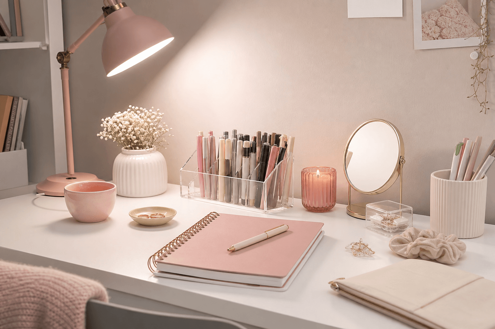
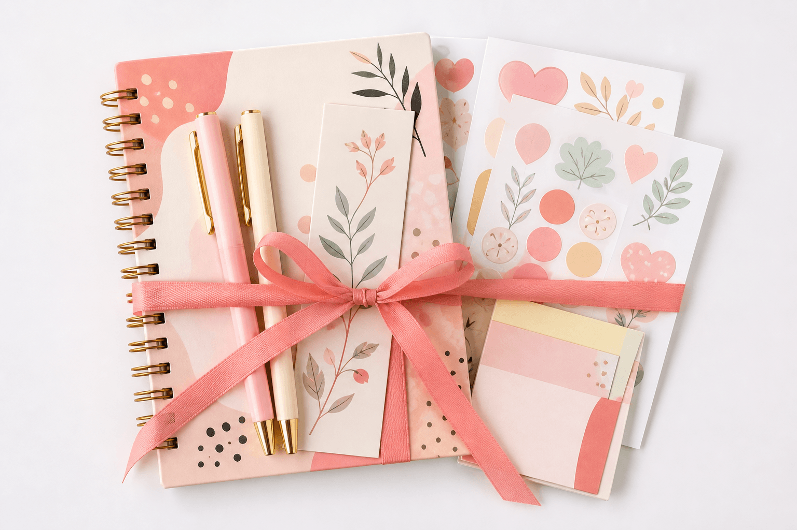
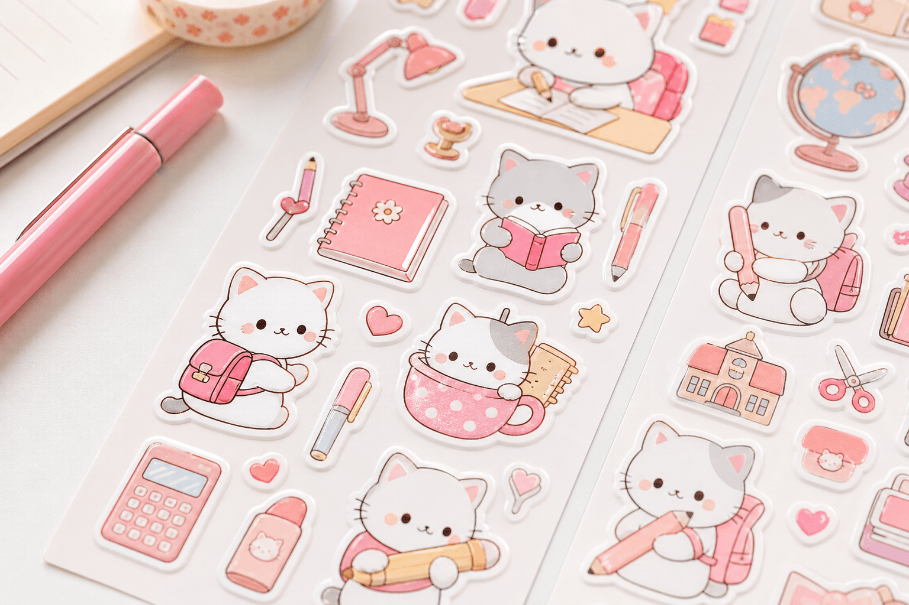
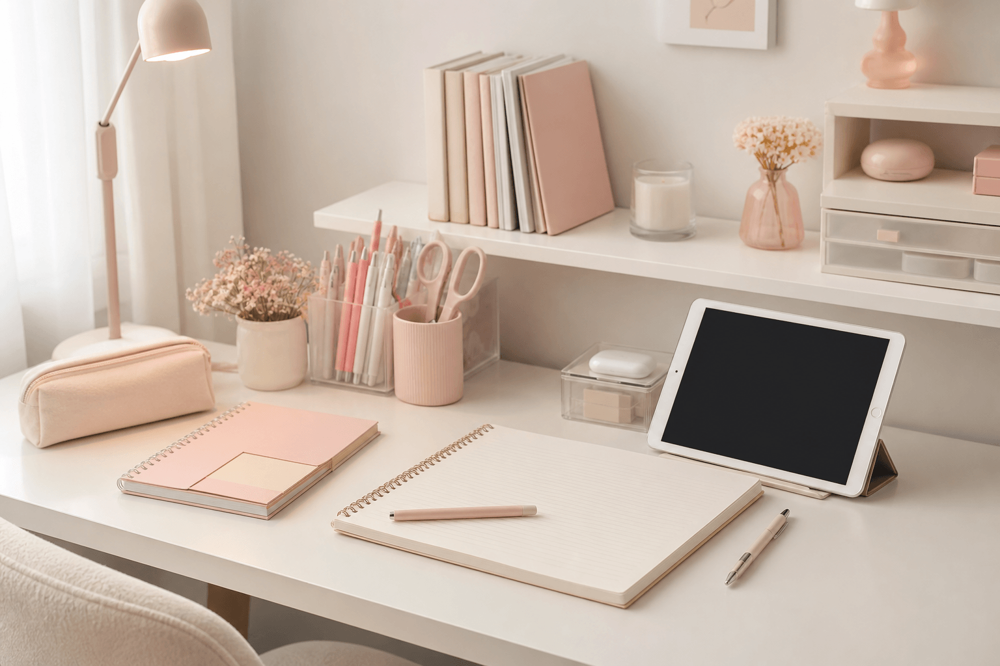

Mùa tựu trường 2027 không chỉ là checklist vở–bút–thước. Học sinh và sinh viên đang tìm đồ dùng học tập theo từ khóa trend: study aesthetic, dopamine desk, sticker cute, analog journaling, desk tour. Bài viết gom 8 cụm đang lên trên TikTok và Pinterest, gợi ý cách mua thật — không cần theo hết trend, chỉ cần chọn 1–2 vibe khớp với góc học của bạn.
1. Vì sao mùa tựu trường 2027 khác năm trước?
Hai năm gần đây, văn phòng phẩm trên TikTok không còn “mua cho đủ”. Người xem muốn góc bàn ăn ảnh, vừa học vừa quay study with me, vừa có thứ để “flex” gu. Sang 2027, xu hướng này rõ hơn theo ba hướng:
- Cá nhân hóa: sticker, sổ, bút cùng một nhân vật hoặc một palette — ví dụ hồng–kem (#ee5f6d) của Mèo Kem.
- Analog journaling: viết tay, planner, scrapbook như liệu pháp chống mỏi màn hình, không thay iPad mà đi song song.
- Ritual nhỏ mỗi ngày: mở sổ, dán 1 sticker, highlight 3 dòng — đồ dùng thành thói quen, không phải đống đồ “mua rồi để tủ”.
Nếu bạn cần danh sách món bắt buộc theo cấp học, xem thêm checklist đồ dùng tựu trường. Bài này tập trung vào từ khóa người ta đang gõ và cách biến trend thành combo thực tế.
2. 8 keyword trend đồ dùng học tập mùa tựu trường 2027

Trend 1: Study aesthetic & desk tour
Người tìm “setup bàn học”, “góc học tập đẹp”, “desk tour” muốn một khung hình: đèn bàn, sổ mở, hộp bút, vài sticker. Không cần phòng rộng — cần bố cục. Hướng dẫn chi tiết nằm ở cách trang trí góc học tập.
Mua gì: đèn bàn 4000K–5000K, hộp bút, 1 planner, 1–2 sheet sticker. Tránh rải 20 món lẻ trên bàn.
Trend 2: Dopamine desk
Dopamine desk là bàn “nhìn là muốn học”: highlight pastel–neon, kẹp bướm màu, sticker tươi. Phù hợp ai dễ chán, cần visual kick mỗi buổi tối.
Mua gì: bút gel nhiều màu, note vuông, sticker chủ đề vui. Giữ tối đa 1 khay màu — quá nhiều tone sẽ thành rối, không còn “dopamine” nữa.
Trend 3: Clean girl desk / pastel matte
Đối cực với dopamine: be, trắng, hồng nhạt, file nhám, ít hoa văn. Clean girl desk dễ quay video, dễ dọn, hợp phòng trọ nhỏ.
Mua gì: sổ bìa trơn, bút gel 1–2 màu, sticker trong suốt hoặc sticker nhỏ dán bìa. Điểm nhấn duy nhất có thể là logo/màu Mèo Kem.
Trend 4: Cherry coded & coquette stationery
Cherry coded (đỏ cherry, nơ, họa tiết quả) và coquette (nơ, ren, hồng đậm) đã lan từ thời trang sang stationery. Với KemStore, palette #ee5f6d nằm đúng vùng này — không cần mua đồ đỏ sẫm mới “vào trend”.
Mua gì: sticker hồng–đỏ, sổ pastel, bút gel đỏ/hồng. Dán cụm 3–5 sticker ở góc bìa, không dán kín trang.
Trend 5: Matcha desk & Korean stationery
Xanh matcha, khay trong suốt, vibe bàn kiểu Hàn: dịu hơn dopamine, “cà phê học bài” hơn clean girl trắng tinh. Mix tốt với hồng kem nếu bạn chỉ thêm 1 món xanh (hộp bút hoặc highlight mint).
Trend 6: Analog journaling & bullet journal
Viết tay, habit tracker, undated planner đang được tìm vì mỏi iPad. Đây là trend “dùng thật”, không chỉ decor. Bắt đầu 6 bước ở bullet journal cho học sinh — sticker chỉ là lớp trên, layout mới là xương sống.
Mua gì: sổ chấm/grid, bút gel 0.5, 1 highlight, sheet sticker nhỏ cho tracker. Không cần 12 bút brush năm đầu.
Trend 7: Stationery haul & unbox đồ dùng học tập
Video unbox/haul tựu trường vẫn kéo view vì người xem muốn “mua hộ”. Nếu bạn quay content, combo đồng màu thắng đống đồ lẻ lệch tông. Gợi ý set sẵn: combo quà tặng tựu trường — vừa tặng bạn, vừa tự dùng.

Trend 8: Sticker cá nhân hóa + scrapbook
Sticker laptop, sticker trong suốt, scrapbook vở — cách rẻ nhất để “custom” năm học mới. Xem layout dán ở scrapbook study aesthetic và trang trí sổ tay bằng sticker.

3. Checklist mua theo trend (không mua thừa)
Dùng bảng này để lọc: món nào cần, món nào chỉ vì video haul.
1 cuốn chính + 1 vở môn. Đủ cho analog journaling.
2–4 cây hay dùng. Xem cách chọn bút gel cute.
1–3 sheet cùng palette. Decor bìa, laptop, tracker.
Gom đồ, dán nhãn — bàn hết “đống tạm”.
2–3 màu. Dopamine desk không cần cả hộp 12.
Nâng cấp. Mua sau khi dùng hết sticker.
| Keyword bạn đang theo | Ưu tiên mua | Có thể bỏ |
|---|---|---|
| Study aesthetic / desk tour | Đèn, hộp bút, 1 sổ, sticker cụm | Figure lớn, đèn neon |
| Dopamine desk | Bút màu, note, sticker tươi | Tone be toàn bộ |
| Clean girl desk | Sổ trơn, 2 bút, sticker nhỏ | Quá nhiều charm |
| Analog journaling | Sổ grid, gel 0.5, tracker sticker | 12 bút brush năm đầu |
| Cherry / coquette | Palette hồng kem #ee5f6d | Mix 5 màu chủ đạo |
4. Ba mức ngân sách combo tựu trường
Số dưới là gợi ý tham khảo khi mua lẻ sticker–sổ–bút online, không phải giá niêm yết cố định. Combo thường rẻ hơn mua rời.
| Mức | Gợi ý | Phù hợp |
|---|---|---|
| Dưới 100k | 2–3 sheet sticker + 1 sổ mini hoặc 1–2 bút gel | Bổ sung, quà bạn cùng lớp |
| 100k–200k | Sticker + sổ + bút cùng tông | Năm học mới “đủ dùng + đủ đẹp” |
| 200k–350k | Combo trên + hộp bút / bookmark / thêm sheet | Setup desk tour, tặng set |

5. Lịch săn đồ tháng 6–8 (tựu trường 2027)
- Tháng 6: chốt palette + list môn. Săn mẫu sticker/sổ còn đủ size.
- Tháng 7: cao điểm livestream TikTok Shop, combo hay giảm. Nên chốt set chính.
- Tháng 8: chỉ bù món thiếu. Tránh mua thêm trend mới nếu bàn đã đủ.
Mua sớm không có nghĩa mua nhiều — nghĩa là còn hàng đúng màu bạn đã chọn.
6. Lỗi thường gặp khi theo trend tựu trường
- Mua theo video, không theo bàn thật. Desk tour studio ≠ bàn 80cm phòng trọ. Đo mặt bàn trước.
- Mix 4 aesthetic một lúc. Cherry + matcha + dopamine + dark academia = rối. Chọn một nền, một điểm nhấn.
- Sticker dán kín rồi hết chỗ viết. Để lề; dán bìa và góc trang, không đè nội dung bài.
- Haul xong không dùng. Nếu 2 tuần chưa mở sổ/sticker, đừng mua sheet thứ tư.
- Bỏ qua bút viết vì lo decor. Bút gel trơn, mực đều vẫn là món “học thật”. Decor chỉ bám trên nền đó.
7. Câu hỏi thường gặp (FAQ)
Mùa tựu trường 2027 nên mua đồ dùng học tập khi nào?
Nên mua từ tháng 6–7/2027 để còn nhiều mẫu và giá ổn. Tháng 8 là cao điểm: hàng hot dễ hết, giá combo thường tăng. Nếu thấy set ưng ý sớm, chốt luôn rồi bổ sung sticker/bút sau.
Trend đồ dùng học tập nào hot nhất mùa tựu trường 2027?
Ba cụm đang được tìm nhiều: study aesthetic / desk tour, analog journaling (sổ tay, bullet journal) và sticker cute cá nhân hóa. Đi kèm là dopamine desk, clean girl desk, cherry coded và combo tựu trường.
Dopamine desk và clean girl desk khác nhau thế nào?
Dopamine desk dùng màu tươi, sticker nhiều, highlight neon để tạo năng lượng. Clean girl desk tối giản, pastel nhám, ít đồ trên mặt bàn. Có thể mix: nền clean + 1 cụm sticker Mèo Kem làm điểm nhấn.
Mua đồ dùng tựu trường 2027 ở đâu?
KemStore.vn có sticker cute, sổ tay, bút gel đồng bộ màu Mèo Kem. Đặt trên TikTok Shop (giá tốt) hoặc Shopee (giao toàn quốc), kèm voucher 10% trên web.
Kết luận
Mùa tựu trường 2027 xoay quanh vài từ khóa: study aesthetic, dopamine desk, analog journaling, sticker cute và combo đồng bộ. Bạn không cần theo hết — chọn 1 palette (hồng kem Mèo Kem là đủ “cherry/coquette” cho đa số bàn học), mua ít nhưng đúng, rồi dán sticker có chủ đích. Góc học vừa học được, vừa quay desk tour được, ví không thủng vì trend.